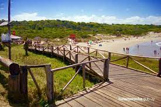
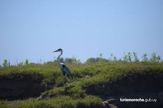
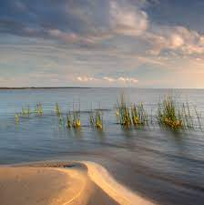
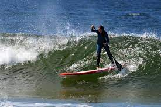
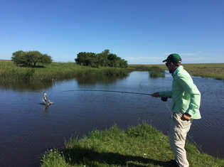
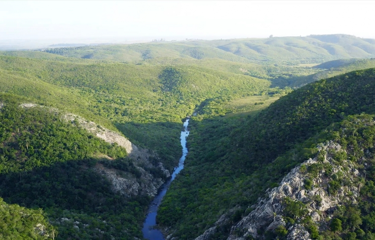

Explora la Naturaleza de Uruguay: Actividades al Aire Libre
Senderismo en Parques Nacionales

- Parque Nacional Santa Teresa: Embárcate en una emocionante caminata por los senderos del
Parque Nacional Santa Teresa y maravíllate con su exuberante vegetación,
lagunas y playas vírgenes.
-
Parque Nacional Cabo Polonio: Sumérgete en la belleza salvaje de Cabo Polonio
mientras recorres sus dunas de arena y descubres su rica biodiversidad,
incluyendo colonias de lobos marinos y aves marinas.
Avistamiento de Aves

-
Reserva de Biosfera Bañados del Este: Observa una impresionante variedad de aves en su hábitat natural mientras exploras los humedales de esta reserva de biosfera,
hogar de especies como el flamenco rosado, el chorlito pampa y el carancho.
-
Parque Nacional Esteros de Farrapos e Islas del Río Uruguay: Únete a una emocionante excursión de observación de aves en este parque nacional,
donde podrás avistar una amplia variedad de aves acuáticas y migratorias.
Ecoturismo en Reservas Naturales

- Reserva de Biosfera Bañados del Este y Franja Costera: Explora los humedales y la costa de esta reserva de biosfera en kayak o en bote,
y descubre su fascinante ecosistema y su rica biodiversidad.
- Reserva Natural de Punta Rasa: Embárcate en una emocionante aventura de observación de fauna marina en esta reserva natural,
donde podrás avistar ballenas, delfines y lobos marinos en su hábitat natural.
Surf y Deportes Acuáticos

- Punta del Este: conocida como la "Perla del Atlántico",
es uno de los destinos turísticos más exclusivos de Uruguay y también un paraíso para los amantes del surf. Con playas como Playa Brava y Playa Mansa, Punta del Este ofrece olas perfectas para surfear, así como oportunidades para practicar kiteboarding, windsurf y paddleboarding en sus aguas cristalinas.
- La Paloma: ubicada en el departamento de Rocha, La Paloma es otro destino popular para los deportes acuáticos en Uruguay. La playa de La Balconada es famosa por sus olas ideales para surfear, mientras que Playa del Barco ofrece condiciones perfectas para el kitesurf y el windsurf.
Pesca Deportiva

- Rio Negro: El Río Negro, que atraviesa los departamentos de Paysandú y Río Negro, es otro destino destacado para la pesca deportiva en Uruguay. Con sus aguas claras y una gran diversidad de especies, incluyendo dorados, tarariras, bagres y más,
el Río Negro ofrece emocionantes oportunidades para pescadores de todas las habilidades.
- Laguna Garzón: Ubicada en el departamento de Maldonado, la Laguna Garzón es un paraíso para los amantes de la pesca deportiva. Esta laguna costera ofrece una
gran variedad de especies para pescar, como corvinas, lenguados, pejerreyes y más.
Observación de Fauna y Flora

-
Reserva Natural Laguna de Rocha: Descubre la flora y fauna únicas de esta reserva natural mientras exploras sus senderos y lagunas,
y observa aves como el cisne de cuello negro y el flamenco austral.
- Parque Nacional Quebrada de los Cuervos: Maravíllate con los espectaculares paisajes de este parque nacional mientras observas la flora y fauna local,
incluyendo guanacos, zorros y una gran variedad de aves.